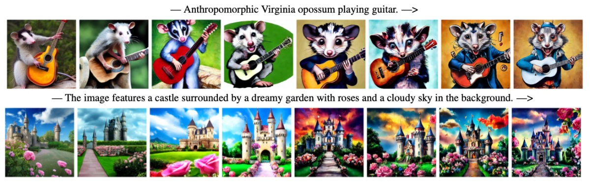

Diffusion Alignment Beyond KL: Variance Minimisation as Effective Policy Optimiser
ICLR Workshop 2026ReALM-GEN Workshop at ICLR

In brief
VMPO reframes diffusion-model alignment through Sequential Monte Carlo: instead of optimizing a KL-based objective, it minimizes the variance of log importance weights along the denoising trajectory. This one lens recovers several existing alignment methods as special cases and suggests new design directions beyond KL regularization.
Key takeaways
- Diffusion alignment naturally admits a Sequential Monte Carlo interpretation: the denoising model acts as a proposal and reward guidance induces importance weights.
- The variance objective is provably minimized by the reward-tilted target distribution, and under on-policy sampling its gradient coincides with standard KL-based alignment.
- Different choices of potential functions and variance-minimisation strategies recover various existing alignment methods.
- Demonstrated by fine-tuning Stable Diffusion 1.5 and 3.5 across a wide range of reward functions.
Abstract
Diffusion alignment adapts pretrained diffusion models to sample from reward-tilted distributions along the denoising trajectory. This process naturally admits a Sequential Monte Carlo (SMC) interpretation, where the denoising model acts as a proposal and reward guidance induces importance weights. Motivated by this view, we introduce Variance Minimisation Policy Optimisation (VMPO), which formulates diffusion alignment as minimising the variance of log importance weights rather than directly optimising a Kullback-Leibler (KL) based objective. We prove that the variance objective is minimised by the reward-tilted target distribution and that, under on-policy sampling, its gradient coincides with that of standard KL-based alignment. This perspective offers a common lens for understanding diffusion alignment. Under different choices of potential functions and variance minimisation strategies, VMPO recovers various existing methods, while also suggesting new design directions beyond KL.
BibTeX
@inproceedings{vmpo,
title = {Diffusion Alignment Beyond {KL}: Variance Minimisation as Effective Policy Optimiser},
author = {Ou, Zijing and Si, Jacob and Zhu, Junyi and Bohdal, Ondrej and Ozay, Mete and Ceritli, Taha and Li, Yingzhen},
year = {2026},
booktitle = {ReALM-GEN Workshop at ICLR},
url = {https://arxiv.org/abs/2602.12229},
}